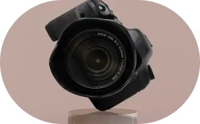

<section class="section-aboutus" id="about-us">
  <div class="container">
    <h2 class="aboutus-title">
      About<span class="aboutus-title-span"> Us</span>
    </h2>
    <div class="aboutus-block">
      <div class="container-img">
        <picture>
          <source
            media="(min-width: 1440px)"
            srcset="
              ../img/about_us/aboutus_desk2.webp    1x,
              ../img/about_us/aboutus_desk2@2x.webp 2x
            "
          />
          <source
            media="(min-width: 1280px)"
            srcset="
              ../img/about_us/aboutus_desk.webp    1x,
              ../img/about_us/aboutus_desk@2x.webp 2x
            "
          />
          <source
            media="(min-width: 768px)"
            srcset="
              ../img/about_us/aboutus_tab.webp    1x,
              ../img/about_us/aboutus_tab@2x.webp 2x
            "
          />
          <source
            media="(max-width: 767px)"
            srcset="
              ../img/about_us/aboutus_mob.webp    1x,
              ../img/about_us/aboutus_mob@2x.webp 2x
            "
          />
          
        </picture>
      </div>

      <ul class="aboutus-text-ul">
        <li class="aboutus-li">
          <p class="text-one">
            Our photography school is designed to teach you everything you need
            to know about this magical art. Regardless of your experience or
            skill level, we offer a wide range of courses to suit your needs and
            interests. Our teaching team consists of experienced photographers
            who have many years of experience in this field. They strive not
            only to share their knowledge, but also to inspire you to develop
            and express your unique creativity.
          </p>
        </li>
        <li class="aboutus-li">
          <p class="text-two">
            Our courses cover a wide range of topics, from the basics of
            photography and equipment use to professional image processing and
            creating impressive compositions. You will have the opportunity to
            learn the technical aspects of photography, discover your own style
            and develop your own visual language.
          </p>
        </li>
      </ul>
    </div>
  </div>
</section>
